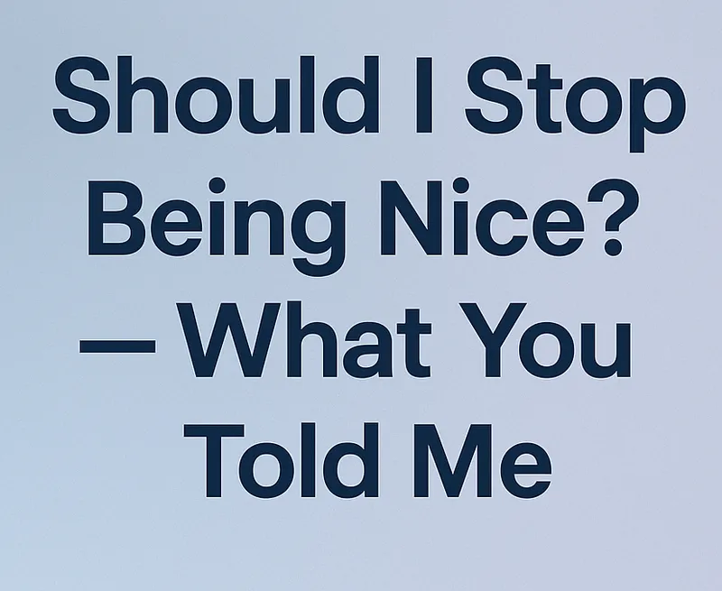

Essay · October 3, 2025
Should We Stop Being Nice? What You Told Me
Your answers were often surprising.

When I asked Should I Stop Being Nice?, I wasn’t sure how much the question would resonate. Apparently, quite a lot! Across Substack, Medium, TikTok, and email, the post drew over a thousand views and dozens of comments. Readers shared personal stories, sharp distinctions, challenges, and encouragement.
It was too rich a conversation to leave scattered in the comments, so here’s what you told me — and what I learned from it.
The Power of Small Gestures
Many of you reminded me that kindness isn’t always grand. Smiling at a stranger, holding a door, complimenting someone — these “little rays of sunshine” brighten days in ways we may never realize.
As one reader put it: “I believe it is our obligation to be a bright light to others. Whether it is holding the door, an unexpected good morning, or a larger than normal tip, it can help someone else’s day.”
What I heard was that such gestures are less about etiquette than about recognition: making others feel that they matter, even briefly. Acknowledging a common humanity can strike a deep chord.
Niceness vs. Kindness
A strong theme was the difference between “being nice” and “being kind.” Niceness, some argued, is politeness — sometimes superficial, even fake, or done with a purpose. Kindness goes deeper: it’s empathy, a genuine concern for others, done for its own sake.
One reader summed it up: “Niceness can be faked. Kindness can’t.” Another added: “It seems to me that nice and kind are different in that niceness is about politeness while kindness includes empathy.”
That struck me. Maybe “nice” is too small a word for what we really mean.
Civility and the Common Good
Others pushed the idea beyond individuals. What we need, they said, isn’t just niceness in personal encounters but civility — respect for each other in the civic sphere, the public space. Civility is what makes trust and public life possible. Without it, institutions fray and conflict fills the vacuum.
One reader wrote: “As I read your account of the careless disregard of the last woman through the doorway, a lack of civility seems more apt to me. Civility implies a sense of obligation to the common public space.”
Another was blunt: “So maybe we should not fret about being nice — or about other people not being nice enough — and instead focus on the trait of being civic.”
The Limits of Niceness
Not everyone was convinced niceness is always good. A few cautioned that it can be weakness, even a liability if it means letting cruelty prevail. On TikTok especially, people stressed the tension: yes, be kind — but don’t let yourself be walked over.
One response put it this way: “Yes, we should be nice. That doesn’t mean being a patsy, letting others walk all over us. Niceness recognizes everyone’s humanity, respects people and their opinions, defends those who cannot defend themselves without demonizing those with whom we disagree.”
Another said simply: “Be nice where it warrants being nice. Otherwise sometimes you just have to fight fire with fire.”
This matched my own hesitation when I first wrote the essay. Niceness without strength risks being diminished.
Putting Kindness Into Action
Several of you reminded me that kindness doesn’t stop at words or small gestures — it can take shape in real actions that ripple outward.
One reader described how, after waves of federal layoffs, they created a pro bono coaching service for fired federal employees, helping people regain confidence, find new paths, and hold on to their sense of worth, by being recognized. It was a striking reminder that kindness can be structured, intentional, and sustaining.
Others mentioned community work, mentoring, or simply making space for people who felt overlooked. These aren’t headline-making acts, but they matter on their own level — to the people directly touched, they can mean everything.
Kindness, in other words, is not just a sentiment. It’s something you can incorporate into your life — whether by coaching, mentoring, volunteering, or just showing up consistently for others
Timeless Lessons
Several readers drew from history and literature. Some pointed out that even The Iliad, a tale of rage and war, ends with a moment of kindness: “So what did Helen find exemplary in Hector? Not his strength. Not his physical beauty and presence. Not his skills in battle. Not his able leadership among men. It was his kindness toward her. The way he defended her against the opprobrium of his kinsmen. This is how the Iliad ends — on an exaltation, not of the glory of war, but on the power of kindness.”
Others emphasized kindness as essential, not optional. One reader wrote: “Kindness is our only hope. Being mean is like bitterness and anger: drinking poison and expecting the other person to die.”
These examples remind us that kindness is not modern sentimentality but a timeless necessity.
What I Took Away
From all of you, I came away with this:
Niceness may be the doorway, but kindness encompasses deeper realms.
Civility extends that kindness into the public realm, making democracy possible (and by implication how the lack threatens our social and political organization).
And kindness has boundaries: it doesn’t mean surrender.
Maybe the question isn’t whether to stop being nice, but how to reclaim niceness as part of something larger — empathy, civility, and shared humanity.
Keep the Conversation Going
Thank you to everyone who shared your thoughts. Your responses gave me not only encouragement but also new ways of seeing.
So let me ask again: what role do niceness, kindness, and civility play in holding our culture together?
So let me ask again: what role do niceness, kindness, and civility play in holding our culture together?
Comment below, reply by email, or share your thoughts — I’d love to keep the conversation going here.
And if you missed the original essay, you can read it here.